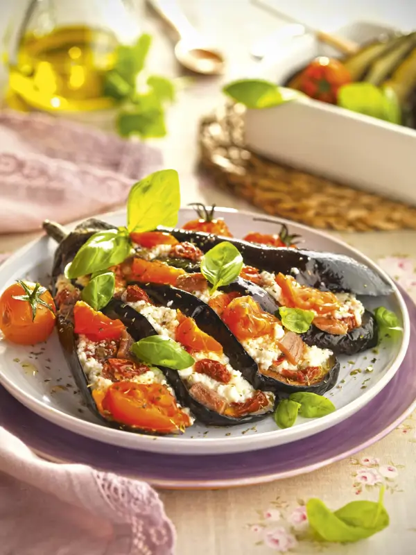

Ensalada de espinacas con boquerones
La ensalada de espinacas con boquerones es una combinación fresca y sabrosa. La suavidad de las espinacas frescas se equilibra a la perfección con el sabor intenso de los boquerones.

